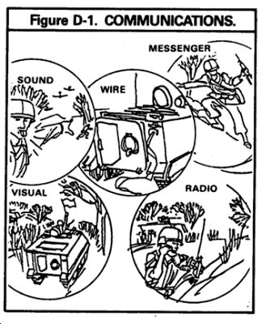
Field telephones are mobile telephones intended for military use, designed to withstand wartime conditions. They can draw power from their own battery, from a telephone exchange (via a central battery known as CB), or from an external power source. Some need no battery, being sound-powered telephones. Field telephones were first used in the First World War to direct troops. They replaced flag signals and the telegraph as an efficient means of communication. The first field telephones had a wind-up generator, used to power the telephone's ringer & batteries to send the call, and call the manually-operated telephone central. This technology was used from the 1910s to the 1960s. Later the ring signal has been made electronically operated by a pushbutton, or automatic as on domestic telephones. The manual systems are still widely used, and often compatible with the older equipment. -- Wikipedia.
Over the years my friends and I have picked up quite a few field telephones, switchboards, miles of military WD1-TT wire and the reels and other tools to deploy and retrieve the wire and connect the phones for tactical communication. Some folks have doubted my sanity. "What do you need those for?" I am often asked by people who notice the boxes of equipment and reels of field wire in my garage. Well, strictly speaking, I DON'T need them. But I MIGHT need them one day. First let me give you a little history and then try to explain my thinking.
The United States Army first used field telephones on a large scale during World War I. (You can find an excellent synopsis history of U.S. field telephony at WLHoward.com entitled US Army Wire Communication WW I to Present here.)

This coincided with the adoption of the radio as a military communication device, but early radios were even more unreliable than early field telephones, so the Army used both. Even though radios have become much more reliable and ubiquitous, the military continued to use field telephones in the early 21st Century because they filled a niche need.
First of all, field telephone communication is both stealthy and secure, as you do not broadcast a signal into the ionosphere where messages can be noted, intercepted, decrypted and transmitters located and destroyed. Field telephones are not, of course, as mobile as radios as they depend upon wire nets.
This is mostly why many militias eschew field telephones in favor of radios. But what happens when the radios don't work or can't be used? Let me give you some possible scenarios to chew on.
EMP events, whether solar or nuclear generated, are a very real possibility. Unshielded electronics can be easily fried. Modern digital communications are particularly vulnerable. How many of you have a back-up plan for communications in the event of EMP? Do you have extra radios with solar chargers packed away in Farraday-shielded containers? All my field phones are.

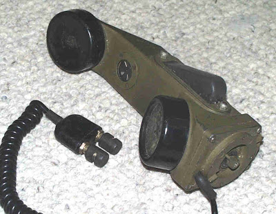
TA-1 sound-powered field telephone.
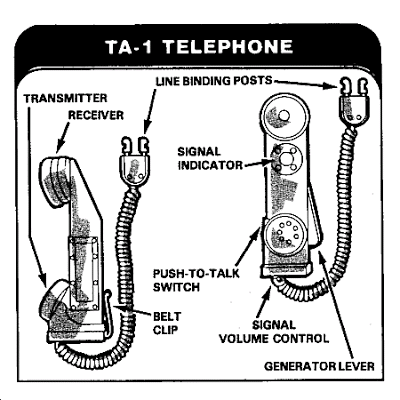
In addition, half of my field telephones are sound-powered TA-1s, which require no batteries. The other half are TA-312s (or the earlier version, TA-43s) which although are designed to be battery-operated on two D-cells can also be operated without them using the sound-power principle.
The TA-1/PT, built to US military specifications, is a one-piece sound-powered field telephone for use on two-wire field lines in forward tactical areas. It can communicate with other field telephones or field and fixed-base LB switchboards. The TA-1/PT is equipped for transmission signaling with a built-in signal generator and for receive signaling with an audible buzzer and volume control. Additionally, a visual indicator on the handset is utilized for silent receive signaling. The set is carried in an all-weather carrying case with shoulder strap, or attached to a field belt with an integral belt clip. Voice transmission range is 6.4 km with WD-1/TT field wire. The set weighs 0.8 kg with carrying case. Signal voltage is 20 Hz, 65 to 80 V. -- Jane's Military Communications.

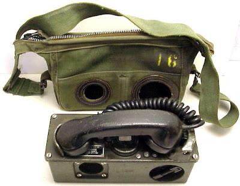
TA-312 field telephone.Built to US military specifications, the TA-312A/PT telephone set is a two-wire, battery-operated tactical system. It can be used as a point-to-point Voice Frequency (VF) wire communications link or in any two-wire ringdown subscriber positions of a telephone communications system. The 4.2 kg telephone set is ruggedised for all-weather field communications requirements, and can be utilized as a desk- or wall-mounted telephone in fixed or mobile military shelters or command posts requiring intercommunications between shelters and field operations. The TA-312A is used either as a Local Battery (LB) or Common Battery (CB) manual telephone and can be set up for operation as a local battery telephone, using Common Battery Signaling (CBS). Additionally, the telephone set is used to control remotely operated radio links by operation of the press-to-talk switch on the telephone handset. The TA-312A has special circuits to reduce or clip high-voltage line surges in the receive mode, and side tone balance is maintained over a range of voice frequencies and battery voltages. The TA-312A can be adapted to interface with automatic switchboards, such as the SB-3614 tactical switching centre, by using the optional TA955/PT tone signaling adaptor. Power requirements are two 1.5 V batteries in the LB mode, 48 V DC in the CB mode. -- Janes Military Communications.

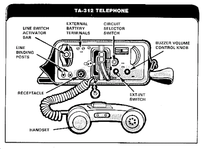
My friends and I joke that after any future EMP burst or solar event, we'll go into business as the Alabama Telephone and Telegraph Company, because we'll have the only phones around that don't require electricity.
Those of you who have read John Rawles book Patriots are familiar with his description of the use of TA-1s to communicate between a hardened defensive position and an out-lying listening post/observation post. While I have one bone to pick with Rawles' scenario, this is not a far-fetched idea. With the apparent impending economic collapse portending (along with all the evil societal implications attendant to that), it may well be that the Obamanoids don't get around to starting a final battle for the Founders' Republic before the whole house of cards falls in on all of us.
In such a case, alternate communications systems such as military field telephones (or improvised systems, see below) could be critical to community defense.
WIRE AND TELEPHONE EQUIPMENT
When in the defense, units normally communicate by wire and messenger instead of by radio. Your leaders will often have you lay the wire and install and operate the field phones.
WIRE-LAYING TECHNIQUES
A surface line is field wire laid on the ground. Lay surface lines loosely with plenty of slack. Slack makes installation and maintenance easier. Surface lines take less time and fewer soldiers to install. When feasible, dig small trenches for the wire to protect it from shell fragments of artillery or mortar rounds. Conceal wire routes crossing open areas from enemy observation. Tag all wire lines at switchboards and at road, trail, and rail crossings to identify the lines and make repair easier if a line is cut.
An overhead line is field wire laid above the ground. Lay overhead lines near command posts, in assembly areas, and along roads where heavy vehicular traffic may drive off the road. Also, lay them at road crossings where trenches cannot be dug, if culverts or bridges are not available. Those lines are the least likely to be damaged by vehicles or weather.
To install the TA-1 telephone:
* Strip away half an inch of insulation from each strand of the WD-1 wire line.
* Depress the spring-loaded line binding posts and insert one strand of the wire into each post.
* Adjust signal volume control knob to LOUD.
* Depress the generator lever several times to call the other operator and listen for buzzer sound.
* Turn the buzzer volume control knob until the wanted volume is obtained.
* Look at the visual indicator to see if it shows four white luminous markings.
* Depress the push-to-talk switch to reset the visual indicator.
The telephone set TA-312 is a battery-powered phone. It has a range of 38 km using WD-1 wire.
To install the TA-312 telephone:
* Strip away one-half inch of insulation from each strand of the WD-1 wire line.
* Depress the spring-loaded line binding posts and insert one strand of the wire into each post.
* Adjust buzzer volume control knob to LOUD.
* Turn the INT-EXT switch to INT.
* Turn the circuit selector switch to LB.
* Insert the two BA-30 batteries into the battery compartment (one up and one down).
* Seat the handset firmly in the retaining cradle.
* Turn the handcrank rapidly a few turns. Remove the handset from the retaining cradle and wait for the other operator to answer.
* Depress the push-to-talk switch to talk. Release the push-to-talk switch to listen.
Rawles' survivalist scenario envisioned a single LP-OP overlooking the road. In real life, this leaves the rest of the perimeter open to surprise attack. In real life, a secure position requires eyes on all 360 degrees, and thus a number of LP-OPs all linked in a "platoon hot-loop."

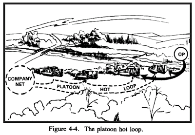

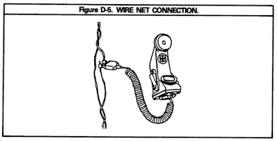
The "hot-loop" links all the phones together without a switchboard. For small units, there is also a light-weight switchboard available, the SB-993.

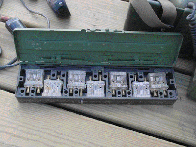
The SB-993/GT is a lightweight, portable switchboard capable of handling six local-battery telephone lines. It is designed for use in forward combat areas and requires the use of either a local-battery telephone or a sound-powered telephone.

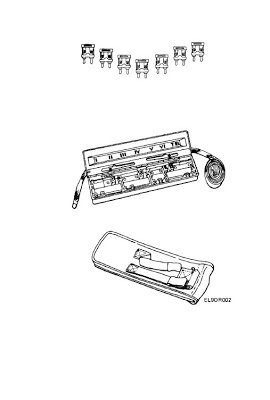
The SB-993 requires no power of its own. Each terminal has a small neon light within it which lights up when a call comes in. By stacking the terminals from the various phones together, one on top of the other, the switchboard operator can connect phones or entire loops together. The entire assembly weighs less than 4 pounds. The manual for the SB-993/GT can be found here.
There is a larger, more capable portable switchboard, the SB-22A/PT.

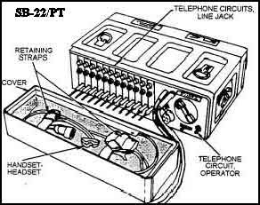
The SB-22A/PT is a tactical manual switchboard that can be rapidly installed to provide field facilities for interconnecting 12 local-battery telephone circuits, remote controlled radio circuits, or voice frequency (VF) teletypewriter circuits. Two SB-22/PTs may be stacked to provide a 29-circuit capability by removing one TA-221/PT (operator's pack) and inserting five TA-222/PTs (line packs). Replacing a line pack with a trunk pack permits one-way ringdown and one-way automatic trunk circuits between the SB-22A/PT and any other switchboard with common-battery signaling. Operating off 4 D-cells, it weighs 34 pounds.
Obviously the SB-22 would be best for more-or-less permanent field wire set-ups, although it is designed to be portable.
Generating the signal is one thing, routing it is another, but neither telephone nor switchboard are any good with field wire. The most common USGI field telephone wire is the WD-1/TT.

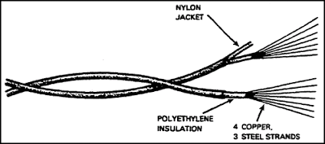
WD-1/TT and WD-1A/TT have two twisted, individually insulated conductors. The only difference between the two is that the WD-1A/TT has two insulated conductors bonded together. The conductors are four tinned-copper strands and three galvanized-steel strands with an inner insulation of polyethylene and an outer nylon insulation jacket. The wire's tensile strength is approximately 200 pounds (both conductors) and it weighs 48 pounds per l.6 kilometers (1 mile).
As field telephones and the equipment they linked to became more sophisticated, the military also procured a four-wire field cable which looks like two strands of WD-1/TT twisted together, the WF-16/U. It has four copper-cadmium alloy standard insulated conductors in two pairs. One pair is olive drab; the other brown. The olive drab conductor has a ridge along the side for night identification. WF-16/U weighs 62 pounds per 1.6 kilometers or 1 mile.

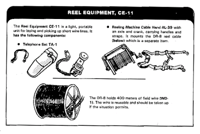
Reel Equipment CE-11 is a lightweight portable unit designed to be carried by one person. It consists of Reel Unit RL-39 and a sound-powered telephone handset with case and carrying strap. Reel Unit RL-39 mounts Spool DR-8 having a capacity of .4 kilometer (1/4-mile) or Field Wire WD-1/TT or WD-1A/TT. . . When Telephone Set TA-1/PT is used, it is carried on the belt.
We have experimented with unwinding WF-16 into two separate wires, much like WD-1/TT. In this manner we generate more two conductor wire which we load onto empty DR-8B reels.
Empty DR8B reel, showing connecting blocks on side.

Which brings us to reels. The DR-8B is the smallest tactical reel, holding about 400 meters of WD-1/TT.
DR-8B reel with RL-39 reel equipment handles, crank and strap.

Reel Unit RL-39 is a chest-type reel having an axle with carrying handles, carrying straps, and a crank for rewinding. Reel Unit RL-39 mounts Spool DR-8-A, which has a capacity of .4 kilometer (1/4-mile) of Field Wire WD-1/TT or WD-1A/TT (wire not included as a component). Lines may be laid with this equipment either by handcarrying the reel or by strapping it to the back. To recover telephone wire, the wireman snaps the carrying handles to the carrying straps and rotates the reel with the crank and axle. This reel is normally used to lay short local circuits, up to .4 kilometer (1/4-mile) over difficult terrain, or in a forward combat area.
You will see these often in war movies being used as demolitions wire.
There are two other reels commonly encountered.

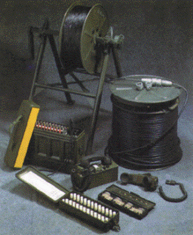
An RL-159 reel mounted on a Reel Unit RL-31-E and a larger DR-5 reel sitting on end beside it.The RL-159/U reel is a metal spool-type container used to store, transport, lay, or recover field wire. It will hold 1.6 kilometers (1 mile) of field wire and can be mounted on Reeling Machine RL-207/G, Reel Unit RL-31-E, Reeling Machine RL-172/G, or Axle RL-27().
The larger DR-5 reel is a metal spool-type container used to store, transport, lay, or recover field wire. It will hold 4 kilometers (2.5 miles) of field wire and can be mounted on Reeling Machine RL-207/G, or Reel Unit RL-31-E.
With the larger reels, larger reel equipment is necessary to pay out or recover the wire.

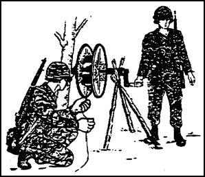
Recovering wire on an RL-159 reel using an RL-27 axle.Axle RL-27-B is used to lay and recover field wire. The axle is a machined-steel bar (2 1/2 feet long) used for mounting wire reels. The axle has two knurled handles, one removable for mounting Wire Reel RL-159/U on the axle. The axle has roller bearings and is equipped with a removable crank for re-winding wire. The axle can be carried by two individuals or placed on some improvised mounting.

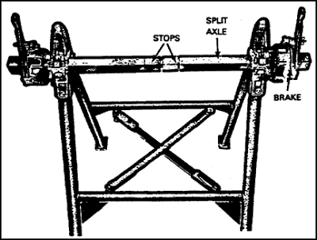
The Reel Unit RL-31-E is a light-weight, portable, folding A-frame of steel tubing used for paying out and recovering field wire and field cable. The reel unit features:
· Brake unit for controlling speed of the reels during payout of the wire.
· Crank for reeling in wire on reels.
· Carrying strap for carrying the reel unit litter style.
· Divided axle when two reels are mounted on the reel unit. This axle allows either reel to operate independently. (When the divided axle is used, two cranks and two brakes are necessary for operation. They are issued with the equipment.)
The reel unit can carry a single Reel DR-5 or DR-15-B, or two Wire Reels RL-159/U. Reel Unit RL-31-E can be mounted on ground or vehicle. A special vehicular installation kit is available.

Now, I will be the first to admit that military wire, whether WD-1/TT or WF-16/U, is becoming scarcer and more expensive. So too are the phones. There are ways to substitute or improvise for the wire, however.
For example, railroad linemen used to use field telephones that just hooked up to the rails. In this old issue of The American Telephone Journal the U.S. Army Signal Corps is reported to have used barbed wire fences out west for wire-substitutes. In addition, of course, any two conductor wire with reasonable weather-proofing can be used. Plain old speaker wire, for example.
Also, there has been considerable work by cave rescue folks to improvise the phones themselves. For example, go here and here.

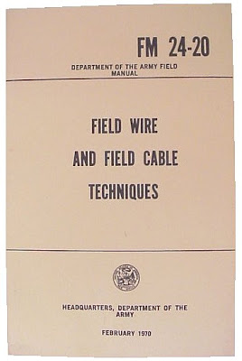
The bible for military field telephone communications techniques and equipment is FM 24-20.
If you do nothing else, start thinking now about what happens if or when you cannot access the sophisticated technology you now rely upon. Once you've thought it through, then start getting ready to improvise, adapt and overcome.
Mike
III
18 comments:
I would also suggest in addition to field phone systems that ALL of us should be amateur radio operators
(Hams). The licensing is easy, the tests are simple, and the equipment can be very inexpensive. Two grand can make you the king of the hill.
Hams are like hot rodders and gun nuts and bikers, they will help you find killer deals on used stuff. A
great community of real Americans.
Look at the ARRL site to find local clubs and get into the meetings. The
people there can find equipment and
education for the newbie. Most of these guys/gals are older and they love to talk. There ain't nothing like hearing about WWII from an 89
year old guy who was there and is as lively and as bright as a warm mountain day in the fall.
Of course, there are the kids who are 12 who know CW (Morse code). :D
MOST IMPORTANT!:
"Field Day" is coming up on June 26/27. That is where you can go to see radios being used and actually get on the air with no experience.
(A licensed ham will supervise.)
I STRONGLY SUGGEST that alla y'all get on out to one just to see how cool it is, and to tempt you into
getting at least a handheld rig.
There are also the "Hamfests", in August. A great time to go with an "Elmer" (the guy teaching you) to buy used or new rigs and antennas dirt cheap! A hundred bucks can get you up to 80 miles of comm. Or more.
In any dire situation, whether short term or prolonged, the ham radio network is indispensible. Being able to have communication over a few miles is nice, but KNOWING what is going on a few hundred or a few thousand miles away is essential to forming a "big picture" when normal
commo mediums are down or gone.
Batteries, Faraday cages and mechanical recharging systems are essential. An exercise bike can work to make a battery charger.
The fun part is that you meet both locals and people from the other side of the world while practicing to do some disaster relief commmunication.
Whatever the disaster may be? :D
(Tech tip: When you get licensed, your address is on a public record.
That could be an OPSEC concern.
Use a PO Box. Most hams do that.)
I could say a lot more, but just get on the ARRL site and do yer research.
- 73's from Tom, III
Oh, yeah. Whether ya decide ta “bug in” at your location or go mobile, be sure to disconnect from your antennas when you are off the air and put yer radio in the Faraday cage. That coax will suck up a potential EMP and you will have fried transceiver fer breakfast! Always keep a protected spare that will work on multiband. Now go get educated. I hope to have inspired some of you. This is a useful part of the patriot’s portfolio.
It’s like any other practical skill, it is a fun thing until the feces hits the oscillator. After that, it becomes valuable knowledge. I just pray that we have only natural disasters to contend with in using those talents.
Then again, some people just don’t know when to quit, now do they?
Si vis pacem, para bellum.
Pretty good article on field phones. one small point with the Wikipedia article, the hand crank generator is for signaling only, not recharging batteries.
SB22's are great however command a very high price even in iffy shape.
I've been contemplating designing a simple switch board that could be assembled from commercial parts. It's wouldn't be as rugged as a SB22 but it would be a lot smaller and lighter.
If any one needs help with field phones and switch boards and repairs/parts for the same let me know. I think that Mike has my email addy.
Incidentally ham fests are scheduled all around the year, You will need to discover when the local ham club has theirs, just google "hamfest calender".
I also know of a source for 5 mile spools of phone wire in western N.C. at a really great price.
Dr.D III
The Russians conducted an EMP experiment back in 1962. Whether it was done intentionally or not is another question we may never know the answer to but some of the results are noted here: http://glasstone.blogspot.com/2006/03/emp-radiation-from-nuclear-space.html
Hmmm, the verification word is "dednet".
The TA-312 have other uses as well. They make a nice addition to your fishing gear. Quite illegal to use, but it does work. Spread the leads out, throw them in the water and start cranking the magneto. Net the fish as they float to the surface.
during WW1 the french used a field telephone system that used an earth connection. each guy sticks a conducting rod into the ground and you have a field telephone with no wires.
I can't find much about it, but I remember it used regular field telephones with an amplifier of some sort.
anyone know more about this system?
One thing to keep in mind as well is that even though it isn't intended as a transmitter, a field telephone will emit EM that can be used for intel by a modern ELINT unit. After all, if they can pickup the stray emissions from your computer monitor and translate that into a readable image of your computer screen, they can certainly recreate the audio from field telephones if they have a receiver in line of sight, and since most ELINT platforms are aircraft now, assume that the alphabet soup boys will.
So treat it just like a radio -- assume that they are listening. Things that you can't afford to let them hear still need to go by courier.
Any idea how useful lineman's handsets would be?
Oops. Dr D is correct, the fests are
happening year round. I was up late and thinking of another event and typed the wrong word. Regardless, all radio stuff is loads of fun and very practical. Get some gear and practice.
I will reiterate that without good
communications you are only informed as far as you can see in the event of an emergency. Whether you are hardwired for your AO or utilizing the ionosphere to check on your friends out of state, (preferably BOTH), radios rank right up there on the short list of stuff to have.
I realize that I've just nicked the tip of the iceberg, but there are a
lot of options out there that will not empty your wallet. I'll warn ya,
it can be an addictive pursuit!
Y'all have a great day.
My first 8 years in the Army were spent as a signal soldier. I've used all the equipment you listed and have a few additional points.
First off, this stuff is called "lightweight" but that is a lie. A TA-1 isn't too bad to hump, but a TA-312 (which has much longer range and a clearer signal) will really wear on you by the end of the day, especially if you are also carrying a DR8 filled with WD1. The military moved to WF16 four strand wire for better power and signal transmission with the MSE system. MSE is now out of the loop since VOIP is the order of the day.
Second, if you are going to use milspec communication gear, you need to know a phonetic alphabet (alpha, bravo, charlie for NATO compliance, Able, Baker, Charlie for the WWII vets, and Adam, Baker, Charlie, David for LEO's). This is because you will be talking through static and poor connections. These old phones operate using analog signals, and so you get analog signal quality.
These old methods of field communication have their uses, but the biggest is the lack of radio transmission to avoid signal triangulation. The second is that you can run wife around mountains and other terrain that blocks line of sight radio signals.
However, studying the communication techniques of terrorist cells is also very useful. Anonymous email, voip conversations, using free wifi and changing MAC addresses on your hardware frequently, all sorts things to make the guys tracking you frustrated.
Mike, For those out there that can afford them I found http://www.armyradio.com/arsc/customer/home.php
They have a section for Field Telephones with Sound powered phones in it.
To Allen:
You can use ground return path for any of the following magneto signaling field telephones
EE-8, TA-43, TA-312 there are other more obscure units whose JAN designations elude me at the moment.
Be aware that using ground return make your phones more susceptible to noise from natural sources like the earth magnetic field, earth currents and lightning as well as the 60 Hz noise from power distribution.
Also range of communications can be adversely effected by soil condition, moisture etc.
Early valve (Tube) amplifiers were employed to intercept ground loop communications. Good rule of thumb is that a pair of wires is vastly superior to any ground loop set up.
To: Old fart
The effects of EMP are well documented, back in the 50's and 60's Los Vagus had serious problems with equipment such as burglar alarms being accidentally triggered by it when nuke tests were conducted.
Expect similar problems if the expected C.M.E. events happen in 2012
Dr.D III
thanks Dr.D..good to know!
I had been thinking of the ground-loop system as a means of communication over short distances, where radio/audible/hand signals might give away a position and you're not there long enough to warrant running wires.
Note to "Allen" (and other readers): That's "Ground *RETURN* path" -- IOW you still need at least one (1) wire...
DD
This is for DR.D
You stated, "I've been contemplating designing a simple switch board that could be assembled from commercial parts. It's wouldn't be as rugged as a SB22 but it would be a lot smaller and lighter.
If any one needs help with field phones and switch boards and repairs/parts for the same let me know."
We ar a Search and Rescue group in Minnesota that uses the TA-312 and TP-6N phones for cave operations. I recently received a SB-22 but have been talking with a fellow communications persion with the National Cave Rescue Commission on the need for as you said a smaller, simpler unit.
I would enjoy discussing the idea with you if you have time.
Thank you.
Ken A.
esssar@comcast.net
hello, can anybody tell me who made the first field telephone, what year, what model, etc, thanks!
vj.
Does anybpdy know what "WD" stands for in WD-1 wire??
WD-1/TT stands for Wire Disposable-1/Telephone Telegram74
Post a Comment